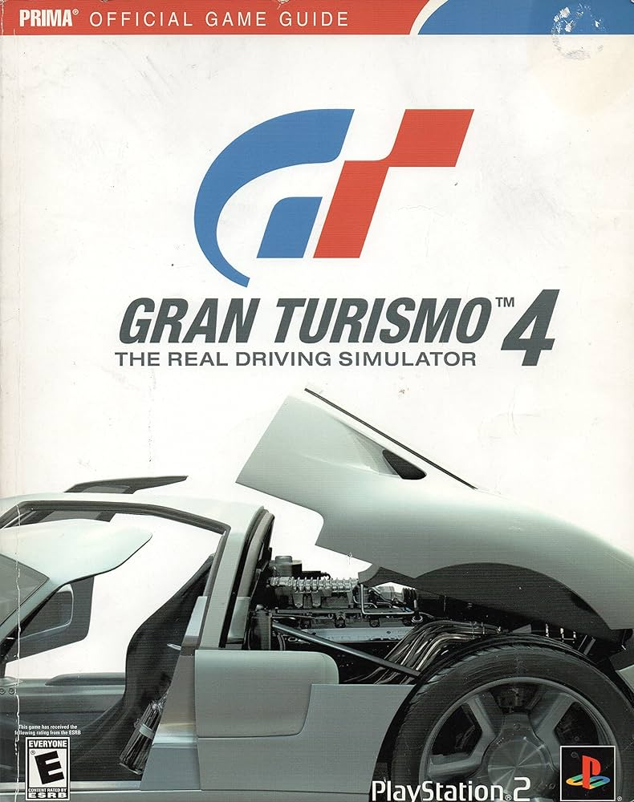

Gran Turismo 4

Gran Turismo 4 (グランツーリスモ4 Guran Tsūrisumo Fō?) é um jogo eletrônico de corrida e gerenciamento de carros desenvolvido pela Polyphony Digital e publicado pela Sony Computer Entertainment. Foi lançado para PlayStation 2 em 28 de dezembro de 2004, no Japão e em Hong Kong, 22 de fevereiro de 2005[1], nos Estados Unidos (NTSC-U/C), e de 9 de março de 2005, na Europa (PAL), e já foi adicionado a lista de jogos da série Greatest Hits, que é uma re-edição para os jogos mais vendidos nos EUA.
Voltar para a Homepage